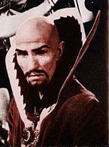

Ming the Merciless
From The Giant: The Definitive Obey Giant Site
From Wikipedia:
Ming the Merciless is a fictional character appearing in the Flash Gordon comic strip. When the heroic Flash Gordon and his friends land on the planet Mongo, they find it ruled by the evil Emperor Ming, a despot who quickly becomes their enemy.
The capital of his empire is named Mingo in his honour. In addition to his army, Ming has access to a wide variety of science fiction gadgets, ranging from rocket ships to death rays to robots. Though evil, he has his weaknesses, which include a desire to marry Flash's beautiful companion, Dale Arden. Ming's daughter Princess Aura is as evil as he is when the series begins, but is eventually reformed by her love for Flash.
Though he is technically an extraterrestrial, Ming strongly resembles a stereotypical Asian supervillain, and his resemblance to Dr. Fu Manchu is especially strong. In later adaptations of the story, his Oriental nature has been downplayed out of sensitivity to criticisms of racial stereotyping. (In fact, in DC Comics' 9 issue Flash Gordon mini-series, Ming and most of the human-like denizens of Mongo [with some exceptions] were given grey skin.)
In the Flash Gordon film serials, Ming was played by Charles Middleton.
In the 1979 Animated version of Flash Gordon, Ming's voice was provided by Alan Oppenheimer.
In the 1980 theatrical film, he was played by Max von Sydow.
Ming served as the principle adversary in the 1980s Marvel animated series Defenders Of The Earth, fighting against other King Features characters such as The Phantom, Mandrake, Lothar, and of course Flash Gordon. In the opening episode Ming successfully captured Dale Arden Gordon and her son Rick, and tore Dale's mind from her body, prompting a vengeful Flash to pursue him back to Earth to avenge her and prevent Ming from enslaving his world. Ming's base on Earth was in the depths of Antartica calld Ice Station Earth, his allies in this series were Garax, leader of the "Men Of Frost," Ming's army of Ice Men, and Octon, a large tentacled battle computer
This version of Ming also included a son rather than a daughter at his side, Prince Kro-Tan, unlike Aura, he held no love for any of the Defenders and considered both they and his father hiderences to his enslavement of the galaxy. Kro-Tan came the closest to defeating his father in a five part story where he successfully entrapped Ming and took over his forces, before Ming was released by the Defenders and took his vengeance. Ming had two carrier spacecraft in this series, one of which was his "Throne Room," his main vessel, which could launch itself from the Artic ocean.
In the late 1990s Flash Gordon animated series, Ming looks totally different: he is a green, pointy-eared, sharp-toothed scaly alien, which cause the heroes to call him a "lizard" (the change to green skin was not an uncommon treatment for Asian villains to receive, and was shared by Doctor No in James Bond Jr. and The Mandarin in Iron Man). In this version, Ming is more humane and even comical at times.
Shepard Fairey used this character's image for his 1998 print Ming.
| |
|
|  |
{kind=link}
{kind=link}
{kind=link}
{kind=link}
© Copyright |
|---|
| This page contains an image or images of drawings, paintings, photographs, prints, or other two-dimensional works of art, for which the copyright is presumably owned by either the artist who produced the image, the person who commissioned the work, or the heirs thereof. It is believed that the use of low-resolution images of works of art for critical commentary on the work in question, the artistic genre or technique of the work of art, or the school to which the artist belongs on the English-language website thegiant.org, hosted on servers in the United States, qualifies as fair use under United States copyright law. |